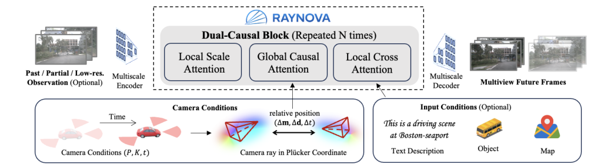
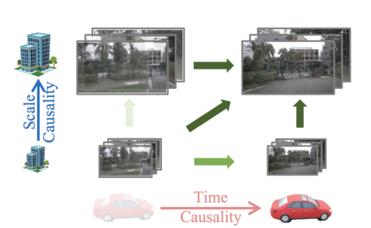
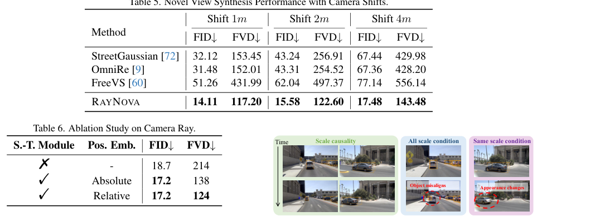
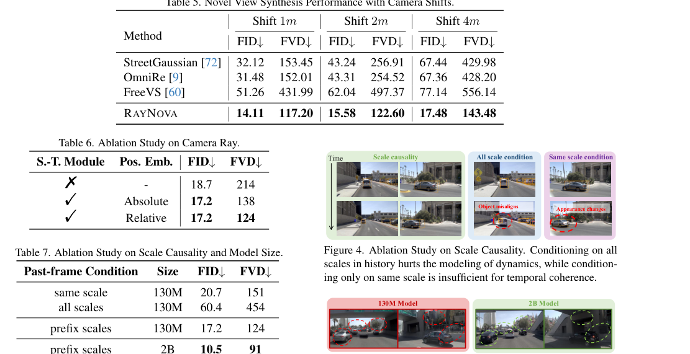

RAYNOVA
简单摘要
世界基础模型旨在通过物理上合理的行为来模拟现实世界的演化。与单独处理空间和时间相关性的现有方法不同，我们提出了一种采用双因果自回归框架的用于驾驶场景的几何对抗多视图世界模型。它在自回归过程中遵循尺度和时间拓扑顺序，并利用全局注意力进行统一的 4D 时空推理。与强加强 3D 几何先验的现有作品不同，基于相对 Plücker 射线位置编码构建跨视图、帧和尺度的各向同性时空表示，从而能够对不同的相机设置和自我运动进行稳健的泛化。
我们进一步引入了一种循环训练范例，以减轻长视野视频生成中的分布漂移。在 nuScenes 上实现了最先进的多视图视频生成结果，同时在不同的输入条件下提供更高的吞吐量和更强的可控性，推广到新颖的视图和相机配置，而无需明确的 3D 场景表示。我们的代码将在 https://raynova-ai.github.io/https://raynova-ai.github.io/ 发布。


简而言之，这篇论文关注的核心是：世界基础模型旨在通过物理上合理的行为来模拟现实世界的演化。与单独处理空间和时间相关性的现有方法不同，我们提出了一种采用双因果自回归框架的用于驾驶场景的几何对抗多视图世界模型。它在自回归过程中遵循尺度和时间拓扑顺序，并利用全局注意力进行统一的 4D 时空推理。与强加强 3D 几何先验的现有作品不同，…
空间本身和时间本身注定会消失为纯粹的阴影，只有两者的某种结合才能保留独立的现实。——赫尔曼·明可夫斯基世界基础模型（WFM）旨在模拟受物理定律支配的动态现实世界中复杂场景的演变。在连续的 4D 时空世界中，世界模型旨在生成由位于特定位置和时间步长的摄像机捕获的物理上合理的图像或视频。为了强加物理合理性，先前的工作通常分别考虑空间和时间约束。对于空间推理，一些方法利用多个视点的位置相关性，包括相机相邻性和跨视图投影。
为了实现时间一致性，之前的工作假设同一摄像机捕获的图像之间存在很强的多帧依赖性，从而利用视频生成的现有技术，例如时间 VAE。然而，这种解耦设计从根本上限制了模型处理新颖传感器配置和快速相机运动的灵活性。或者，一些方法在统一的全局坐标系内构建显式 3D 场景表示（点云或 BEV/体积特征）以增强时空一致性。尽管在受约束的领域内从经验上来说是有效的，但这种几何强制方法阻碍了对训练场景分布之外的不受约束的开放世界环境的泛化。
为了克服这些限制，我们追求一种通用框架，该框架以最小的归纳偏差保留物理合理性。我们提出了一个由规模和时间上的双因果自回归策略支持的世界基础模型。尺度自回归建立在“下一尺度预测”视觉自回归模型的基础上，使模型能够跨多个抽象级别捕获复杂的视觉模式。时间自回归在统一的 4D 时空空间中逐帧工作，以提高时间一致性。其核心见解在于一种新颖的时空调节机制，该机制用相机光线空间中的相对位置编码来表示物理世界。这种光线级表示是连续 4D 空间中的各向同性，从而减少对特定相机配置、运动模式或视图重叠的依赖。
通过编码相对位置而不是绝对位置，它自然支持超出训练分布的外推，并推广到不受约束的现实世界条件。
核心创新
综合引言与方法部分，这篇论文的核心创新可以概括为以下几方面：
1）问题定义与研究动机
空间本身和时间本身注定会消失为纯粹的阴影，只有两者的某种结合才能保留独立的现实。——赫尔曼·明可夫斯基世界基础模型（WFM）旨在模拟受物理定律支配的动态现实世界中复杂场景的演变。在连续的 4D 时空世界中，世界模型旨在生成由位于特定位置和时间步长的摄像机捕获的物理上合理的图像或视频。为了强加物理合理性，先前的工作通常分别考虑空间和时间约束。对于空间推理，一些方法利用多个视点的位置相关性，包括相机相邻性和跨视图投影。为了实现时间一致性，之前的工作假设同一摄像机捕获的图像之间存在很强的多帧依赖性，从而利用视频生成的现有技术，例如时间 VAE。然而，这种解耦设计从根本上限制了模型处理新颖传感器配置和快速相机运动的灵活性。或者，一些方法在统一的全局坐标系内构建显式 3D 场景表示（点云或 BEV/体积特征）以增强时空一致性。尽管在受约束的领域内从经验上来说是有效的，但这种几何强制方法阻碍了对训练场景分布之外的不受约束的开放世界环境的泛化。为了克服这些限制，我们追求一种通用框架，该框架以最小的归纳偏差保留物理合理性。我们提出了一个由规模和时间上的双因果自回归策略支持的世界基础模型。尺度自回归建…
2）方法框架与核心模块
，如图所示，是一个具有自回归的通用世界基础模型。在介绍了初步的“下一尺度预测”工作（第二节）之后，我们在第二节中制定了用于多视图视频生成的双因果自回归框架。对于相干时空推理至关重要，我们在第二节中基于摄像机光线之间的相对位置构建了各向同性 4D 位置嵌入。这使得能够开发基于变压器的无几何框架，该框架具有最小的归纳偏差，用于在第二节中采用不同控制信号的世界建模。最后，为了减轻长视频自回归生成中的分布漂移，我们开发了一种循环训练范例，可以在训练和推理阶段对齐分布（第 2 节）。 初步：下一个尺度预测与将图像的 2D 网格扁平化为 1D 标记的普通自回归模型不同，最近的一些工作从“下一个标记预测”策略转向“下一个尺度预测”策略。将分词器转换为分辨率越来越高的多尺度标记图。 -5pt 是包含视觉标记的尺度标记图。在第 - 个自回归步骤中，所有标记都是并行生成的。我们通过超出图像级“下一个尺度预测”的多视图视频来制定我们的建议。为了支持多功能性，每个图像都被独立标记为每个帧和每个摄像机视图的多尺度标记图。为了对统一空间中多视图和多帧图像的联合分布进行建模，我们的自回归模型考虑了两个因果关系：尺…
3）实验设计与工程价值
实验设置数据集。可以扩展到具有不同相机配置、分辨率或帧速率的异构训练数据。我们结合了两个公共数据集（nuScenes 和 nuPlan），并将其转换为统一的 ScenarioNet 格式。 NuScenes 数据集包含 6 个摄像头收集的 5 个小时的驾驶数据，其中包含边界框和地图注释，以及来自 OmniDrive 的场景描述。对于 nuPlan 数据集，我们根据完整的传感器覆盖范围过滤整个数据集，并使用自动标记的边界框和地图从 8 个摄像头提取 55 小时的数据。我们使用GPT-4o mini进行场景描述。可以进一步扩展到更大规模的数据，详细信息请参阅补充材料。评估指标。为了评估合成图像质量，我们采用 Frechet Video Distance (FVD) 和 Frechet Inception Distance (FID) 。我们还通过使用 NDS 表示对象和 mIoU 表示地图的…
技术细节
下面按照论文的方法章节结构展开，重点说明模型的关键模块、公式设计和训练策略。
，如图所示，是一个具有自回归的通用世界基础模型。在介绍了初步的“下一尺度预测”工作（第二节）之后，我们在第二节中制定了用于多视图视频生成的双因果自回归框架。对于相干时空推理至关重要，我们在第二节中基于摄像机光线之间的相对位置构建了各向同性 4D 位置嵌入。这使得能够开发基于变压器的无几何框架，该框架具有最小的归纳偏差，用于在第二节中采用不同控制信号的世界建模。最后，为了减轻长视频自回归生成中的分布漂移，我们开发了一种循环训练范例，可以在训练和推理阶段对齐分布（第 2 节）。 初步：下一个尺度预测与将图像的 2D 网格扁平化为 1D 标记的普通自回归模型不同，最近的一些工作从“下一个标记预测”策略转向“下一个尺度预测”策略。将分词器转换为分辨率越来越高的多尺度标记图。 -5pt 是包含视觉标记的尺度标记图。在第 - 个自回归步骤中，所有标记都是并行生成的。我们通过超出图像级“下一个尺度预测”的多视图视频来制定我们的建议。为了支持多功能性，每个图像都被独立标记为每个帧和每个摄像机视图的多尺度标记图。为了对统一空间中多视图和多帧图像的联合分布进行建模，我们的自回归模型考虑了两个因果关系：尺度和时间（图 1）。对于尺度因果关系，我们从单帧情况开始。同一帧中多视点图像的分布以联合方式建模，因为多视点图像整体描述了特定时间步长的统一3D空间。为了清楚起见，我们省略了时间步长上标。对于时间因果关系，每一帧的生成都以历史信息为条件。与之前的一些工作不同，我们不假设来自同一相机的多帧图像之间存在很强的相互依赖性，因为这种归纳偏差无法通过复杂的自我运动（转动）来维持。相反，我们根据过去帧的所有视图来调节当前时间步长的多视图图像生成。 -5pt 结合等式中的规模和时间因果关系。和等式。
，我们在 as 中制定了双因果块，它模拟了具有空间和时间一致性的多视图和多帧图像的联合分布。各向同性时空表示 先前工作中的归纳偏差（例如多视图邻接或 3D 潜在特征）限制了它们在开放世界中的泛化以及对异构数据的适应性。或者，我们通过将相对旋转位置嵌入扩展到所有多视图和多帧视觉标记共享的相机光线空间来提出各向同性 4D 位置嵌入，以增强空间和时间一致性。为此，我们从...
$$ p(X_1,X_2,\dots,X_K)=\prod_{k=1}^Kp(X_k|X_1,X_2,\dots,X_{k-1}) \label{eq:var} $$
将图像的 2D 网格扁平化为 1D 标记，最近的一些工作从“下一个标记预测”策略转向“下一个尺度预测”策略。每个图像都被标记器量化为分辨率越来越高的多尺度标记图。自回归可能性的公式如下。 -5pt 哪里是…
$$ p(X_1^{1:V},\dots,X_K^{1:V})=\prod_{k=1}^Kp(X_k^{1:V}|X_1^{1:V},\dots,X_{k-1}^{1:V}). \label{eq:scale} $$
在统一的空间中，我们的自回归模型考虑了两个因果关系：规模和时间（图）。对于尺度因果关系，我们从单帧情况开始。同一帧中多视图图像的分布以联合方式建模，因为多视图图像在特定时间步描述了统一的 3D 空间……
$$ p(X_{1:K}^{1:V,1:T})=\prod_{t=1}^Tp(X_{1:K}^{1:V,t}|X_{1:K}^{1:V,1:t-1}). \label{eq:time} $$
形成。与之前的一些工作不同，我们不假设来自同一相机的多帧图像之间存在很强的相互依赖性，因为这种归纳偏差无法通过复杂的自我运动（转动）来维持。相比之下，我们将当前时间步长的多视图图像生成条件限制在来自…的所有视图上。
$$ p\left(X_{1:K}^{1:V,1:T}\right)=\prod_{t=1}^T\prod_{k=1}^Kp\left(X_{k}^{1:V,t}|X_{1:k-1}^{1:V,1:t}\right). \label{eq:formulation} $$
系统蒸发散（车削）。相反，我们根据过去帧的所有视图来调节当前时间步长的多视图图像生成。 -5pt 结合等式中的规模和时间因果关系。和等式。 ，我们制定了双因果块，因为它模拟了多视图和多帧图像的联合分布......
$$ \mathbf{p}^{v,t}_k=(\mathbf{m}_k^{v,t}\in\mathbb{R}^3,\mathbf{d}_k^{v,t}\in\mathbb{R}^3,t) \label{eq:ray} $$
沿着时间维度编辑，我们保留上标以容忍特殊的变化情况。对于尺度为 的每个视觉标记，可以直接根据相机参数及其在图像空间中的位置计算相应的 Pl\"ucker 射线。我们通过附加额外的时间步长来进一步滥用这种表示法……
$$ a_{i,j}=\left(\mathbf{R}_{k_i}^{v_i,t_i}\mathbf{q}_{k_i}^{v_i,t_i}\right)^T\left(\mathbf{R}_{k_j}^{v_j,t_j}\mathbf{k}_{k_j}^{v_j,t_j}\right)={\mathbf{q}_{k_i}^{v_i,t_i}}^T\mathbf{R}_{\Delta}^{i,j}\mathbf{k}_{k_j}^{v_j,t_j} \label{eq:rope} $$
,chen2024unimlvg，这种绝对位置嵌入在训练阶段限制了超出场景范围的外推能力，从而阻碍了模型的泛化。为此，我们引入了相对嵌入，该嵌入使用修改后的自属性来根据相机光线之间的相对位置来调节网络......



把全文方法串起来看，这篇论文的逻辑基本都遵循同一条主线：先把输入组织成更容易处理的表示，再通过模型结构和损失函数把这个表示推向目标输出，最后用可视化与数值实验共同证明该设计有效。
实验结论
实验部分主要回答两个问题：第一，方法是否真的优于已有基线；第二，这种优势来自哪一个设计决策。
实验设置数据集。可以扩展到具有不同相机配置、分辨率或帧速率的异构训练数据。我们结合了两个公共数据集（nuScenes 和 nuPlan），并将其转换为统一的 ScenarioNet 格式。 NuScenes 数据集包含 6 个摄像头收集的 5 个小时的驾驶数据，其中包含边界框和地图注释，以及来自 OmniDrive 的场景描述。对于 nuPlan 数据集，我们根据完整的传感器覆盖范围过滤整个数据集，并使用自动标记的边界框和地图从 8 个摄像头提取 55 小时的数据。我们使用GPT-4o mini进行场景描述。可以进一步扩展到更大规模的数据，详细信息请参阅补充材料。评估指标。为了评估合成图像质量，我们采用 Frechet Video Distance (FVD) 和 Frechet Inception Distance (FID) 。我们还通过使用 NDS 表示对象和 mIoU 表示地图的感知模型来评估对条件的保真度。除非另有说明，我们在 nuScenes 验证集上进行评估。实施细节。我们构建了预训练 Infinity 模型的两个变体，分别具有 130M 和 2B 参数。我们的训练流程包括三个阶段：1）我们从低分辨率（ ）多视图短片上训练模型开始 2）模型在高分辨率（ ）多视图图像的短片上进一步微调。 3）最后，我们采用了Sec.中的复训。在长序列的驾驶场景上学习长期时间一致性。所有训练均在 32 个 NVIDIA A100 GPU 上进行。视频生成性能结果和比较。在选项卡中。 ，我们将 的多视图生成性能与其他现有的世界模型进行比较。我们的模型训练中不包含内部数据，这使得我们的训练数据规模小于大多数其他方法。结果表明，我们获得的 FID 和 FVD 比所有基线都要好得多，表现出更好的图像质量和时间相干性。值得注意的是，提供了 1.96 个图像/秒的吞吐量，比扩散基线快得多，证明了我们自回归架构的效率。还值得一提的是，我们的模型应用基于图像的 VAE 编码器-解码器来最大限度地减少与相机设置和自我运动相关的感应偏差，尽管这种设计选择可能会损害 FID 和 FVD 指标。我们还在图中提供了一些定性可视化。可以观察到我们的模型可以在不同的条件下生成。
使用双因果自回归，不仅可以匹配或超过在更多数量级的私有数据上训练的模型的性能，而且可以以更高的帧速率运行。对象和地图条件。我们的模型采用可选的对象和地图输入作为额外的局部几何条件来控制多视图视频基因......
- 方法在核心指标上的优势与结构设计和训练目标直接相关；
- 消融实验表明，拿掉关键模块后性能与结果质量都有明显回落；
- 论文不仅比较数值，也关注可视化质量、稳定性和泛化能力等更贴近真实使用的信号。
理解评价
本文介绍了一种多功能自回归 4D 世界基础模型。由双因果块构建，通过沿尺度和时间拓扑顺序的自回归来执行统一的 4D 时空推理。为了增强时空一致性，我们设计了一种嵌入连续 7D Pl\"ucker 射线空间的新颖的各向同性相对位置嵌入，它以统一的方式表示多视图、多帧和多尺度视觉特征。为了减轻长视距视频生成中的分布漂移，我们进一步采用了一种循环训练范式，可以更好地对齐训练和推理的分布。实验表明，可以生成具有高视觉保真度、强的真实多视图视频。时空一致性，以及不同条件信号下的低延迟，同时推广到新颖的视图和看不见的相机配置。
如果把它当成研究参考，建议重点关注三件事：第一，这套方法真正依赖的归纳偏置是什么；第二，实验中真正拉开差距的模块是哪一个；第三，它的局限究竟来自数据、算力还是监督信号本身。
以下相关论文可以作为进一步追踪的入口：